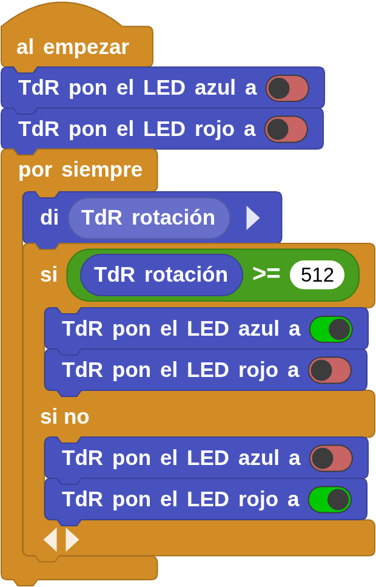
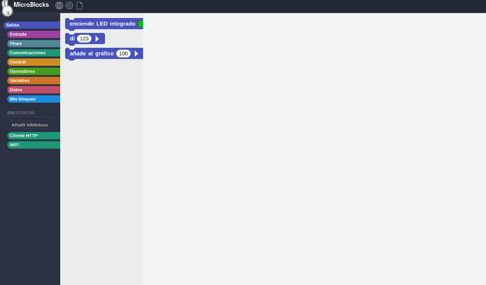

Tarea Reto 17
- Duración:
- 30
- Agrupamiento:
- 1
El reto consiste en encender el led rojo (salida digital 12/IO19) o azul (salida digital 13/IO18) en función de la posición del potenciómetro (entrada analógica 0, A0/IO02). De la mitad hacia la izquierda de la posición del cursor del potenciómetro encenderá el rojo pin 12/IO19 (valores de 0 a 512) y de la mitad a la derecha el azul pin 13/IO18 (valores de 512 a 1023). Además mostrará con la herramienta "di" el valor de lectura analógica del potenciómetro.
Objetivos:
- Repaso comunicaciones serie.
- Conocer y trabajar con potenciómetro.
- Repaso de condicionales.
Código:

